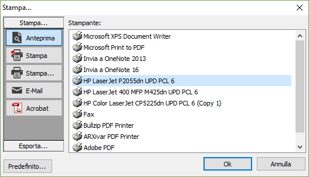
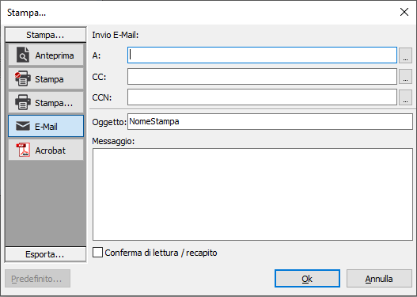
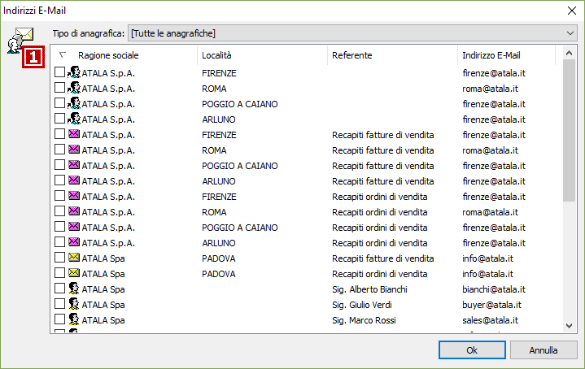
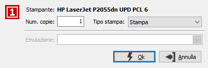
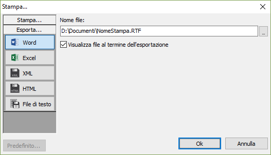
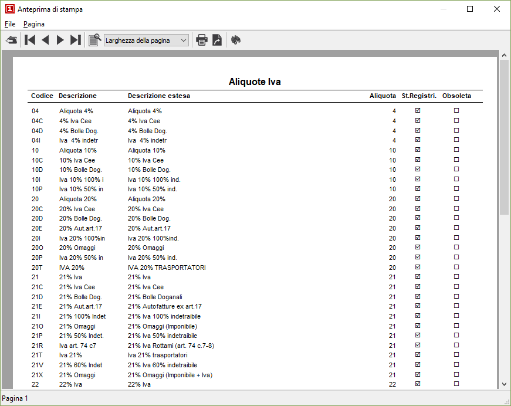
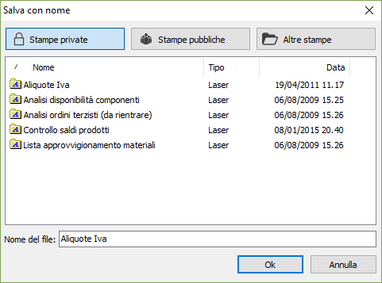
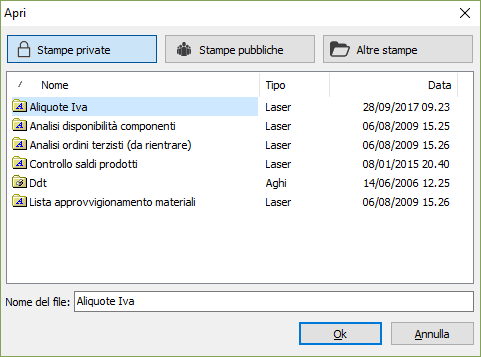

Gestione delle stampe
OS1 è in grado di indirizzare le stampe su tutte le stampanti laser riconosciute dal sistema su cui opera OS1 stesso, su alcune stampanti ad aghi; parimenti è in grado di memorizzare le stesse stampe su files di spool e di richiamarle interattivamente tramite tasti funzione.
Stampe su carta
Eseguendo qualsiasi programma di stampa, dopo l’eventuale inserimento dei parametri previsti dal programma stesso, vengono sempre visualizzati i pulsanti Esegui e Chiudi. Confermando la stampa tramite pressione del pulsante Esegui, viene visualizzata la finestra di selezione per l'uscita a stampa, in cui sono elencate tutte le possibili uscite previste dalla procedura.

I formati di uscita con cui si apre la finestra, che corrispondono alla pressione della barra "Stampa...", consentono di inviare il report al gestore di anteprima, alla stampante predefinita, ad una particolare stampante, è consentito scegliere tra le stampanti installate oppure su di un file in formato AcrobatReader™ (.pdf), in questo caso è necessario specificare la cartella di destinazione, il nome del file e se si desidera visualizzare subito il risultato.

è possibile inviare il risultato della stampa direttamente via e-mail, inserendo l'indirizzo dei destinatari, l'oggetto (viene inserito il nome della stampa) ed il testo dell'eventuale messaggio; è anche possibile richiedere la conferma di lettura/recapito spuntando l'apposita casella. I pulsanti accanto agli indirizzi dei destinatari consentono di ricercare l'indirizzo all'interno delle anagrafiche di OS1.

La finestra presenta gli indirizzi e-mail presenti nelle varie anagrafiche e consente, spuntando la casella, di aggiungerli al messaggio in preparazione.

Premendo il pulsante "Predefinito..." è possibile associare il report ad una particolare stampante, appare la seguente finestra. Qui è possibile indicare il numero di copie e se proporre sempre l'anteprima di stampa, la stampa oppure effettuare la stampa diretta senza far comparire la finestra di Stampa. In caso di stampanti ad aghi è possibile specificare il tipo di emulazione, ma saranno disabilitate le copie e l'anteprima di stampa.
Premendo la barra Esporta si accede ad ulteriori metodi di esportazione della stampa.

Le possibili uscite sono: Word, Excel, formato XML, HTML e file di testo.
Viene richiesta l’indicazione della cartella, del nome del file di destinazione e se visualizzare il risultato al termine dell'esportazione. In taluni casi è richiesto anche se esportare solo i dati o tutta la stampa compresi i formati.
Anteprime di stampa e stampe su file di spool
Oltre che nel modo illustrato nel paragrafo precedente, le anteprime di stampa possono essere avviate tramite il bottone Anteprima (F2) presente sulla barra degli strumenti, quando attivo.
Dopo l’inserimento dei parametri di stampa da parte dell’utente, viene visualizzata l’anteprima:

Sulla barra degli strumenti appaiono alcuni bottoni. Da destra:
CHIUDI: esce dall’anteprima.
PRIMA PAGINA: torna alla prima pagina dell’anteprima.
PAGINA PRECEDENTE: torna l’inizio della pagina precedente a quella attiva.
PAGINA SEGUENTE: va all’inizio della pagina successiva a quella attiva.
ULTIMA PAGINA: va all’ultima pagina dell’anteprima.
DIMENSIONE PAGINA: (lente) ingrandisce o rimpicciolisce la pagina. L’effetto si ottiene anche cliccando sul bottone a destra della descrizione dimensione: si apre la tendina contenente la lista dei valori di ingrandimento.
STAMPANTE: apre la finestra “Stampa...” spiegata nel paragrafo precedente.
ESPORTA: apre una finestra tramite la quale è possibile esportare i dati in PDF, Word, Excel, File di testo.
RICERCA: apre un riquadro a sinistra che consente di digitare una parte di testo e cercarla all’interno della stampa che si sta visualizzando.
Cliccando invece sul menù File e scegliendo l’opzione Salva con nome, si apre la finestra di salvataggio delle stampe di spool.
Salvataggio stampe di spool

L’anteprima di stampa presente a video può essere memorizzata per essere successivamente consultata, in qualsiasi momento e da qualsiasi programma, senza necessità di nuova elaborazione.Il salvataggio viene effettuato in formato .kpr, da cui consegue che il testo in questione può essere visualizzato solo da altri utenti di OS1.
L’utente può scegliere di salvare la stampa come “stampa privata” (ed in tal caso verrà memorizzata in una specifica directory di uso esclusivo dell’utente che la ha generata), oppure come “stampa pubblica” (ed in tal caso la stampa verrà memorizzata in una directory accessibile a tutti gli utenti di OS1, o ancora, cliccando sul bottone Altre stampe, scegliere una specifica cartella su cui effettuare il salvataggio.
Stampa delle stampe di spool
Le anteprime di stampa precedentemente memorizzate possono essere richiamate interattivamente in qualsiasi situazione di programma. Ciascun utente potrà accedere alle proprie “stampe private”, alle “stampe pubbliche” o alle eventuali altre stampe.
Il richiamo delle stampe di spool è avviato dalla pressione del bottone Stampe di spool o del tasto funzione Shift+F2. Appare la finestra video “Apri stampe” già attiva sulla cartella “stampe private”, in cui compare l’elenco delle stampe private dell’utente.

Cliccando sul bottone Stampe pubbliche si può visualizzare l’elenco delle stampe pubbliche di OS1. Infine cliccando sul bottone Altre stampe è possibile navigare sulle cartelle del sistema per ricercare altre stampe .kpr presenti sul sistema stesso. Selezionando il nome della stampa desiderata e confermando con il pulsante Ok, viene richiamata l’anteprima di stampa da cui è possibile, come già illustrato, indirizzare la stampa su una stampante ovvero inviarla per e-mail. In ogni caso, è possibile visualizzate solo le stampe precedentemente prodotte da OS1 e memorizzate in formato .kpr.